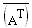

Singular Value Decomposition |
svds(A) (deprecated) Returns a vector containing the singular values of A, the positive square roots of the eigenvalues of the matrix AH·A, where AH is the conjugate transpose of A. You can compute AH in Mathcad using the transpose and complex conjugate operators as follows.

svd(A) (deprecated) Returns one matrix containing two stacked matrices U and V satisfying the equation A = U·diag(s)·VT, where s is the vector returned by svds. The upper matrix, U, is the same size as A. The lower matrix, V, is a square matrix with the same number of columns as A. Use submatrix to extract these smaller matrices.
svd2(A) Returns a vector of 3 nested arrays. The first array contains the vector s of singular values returned by svds. The next two arrays are matrices U and VH satisfying A = U·diag(s)·VH. Note that the third entry is VH, the conjugate transpose of V. This function uses the BLAS/LAPACK libraries from Intel.
A is an m × n array, where m ≥ n. For svd, the array elements must be real numbers; for svd2 and svds, complex values are allowed.